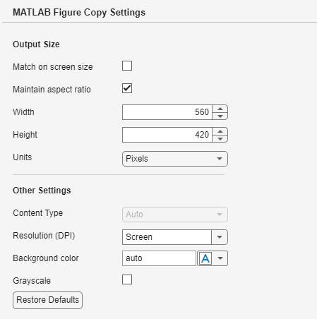

Copy Figure to Clipboard
To copy the contents of a figure to the clipboard, use one of these methods:
Use the figure toolstrip — On the Figure tab, click Copy Figure. This method uses preconfigured options, such as the dimensions, resolution, and whether the content is copied as pixels or vector graphics. You can access these options in the MATLAB® Settings window. The following section describes how to set the options.
Use the
copygraphicsfunction — Pass a figure to thecopygraphicsfunction. This function has several arguments for specifying how the content is copied, such as the width, height, resolution, and whether the content is copied as pixels or vector graphics. For more information, see Export Figures for Use in Other Applications.Use the axes toolbar — In the upper-right corner of a plot, place your cursor over the Export button
 of the axes toolbar and expand the menu.
This menu has options for copying your plot as an image or vector graphic.
When you use this method, you can copy only the plot containing the axes
toolbar. For more information about the axes toolbar, see Interactively Explore and Analyze Plotted Data.
of the axes toolbar and expand the menu.
This menu has options for copying your plot as an image or vector graphic.
When you use this method, you can copy only the plot containing the axes
toolbar. For more information about the axes toolbar, see Interactively Explore and Analyze Plotted Data.
Note
The figure toolstrip and copygraphics function do not copy
containers (such as panels) that are adjacent to other containers or plots. To
capture the entire content of a figure with child containers, use the exportapp function.
Specify Figure Copy Settings
Use the MATLAB Settings window to specify options for copying figures to the clipboard using the figure toolstrip. MATLAB uses these options every time you copy a figure from the toolstrip, but the options do not affect the on-screen appearance of the figure.
To access these options, on the Home tab, in the
Environment section, click  Settings. Then select MATLAB > Figure Copy.
Settings. Then select MATLAB > Figure Copy.

This table describes each of the options.
| Section | Options |
|---|---|
Output Size |
|
Other Settings |
|